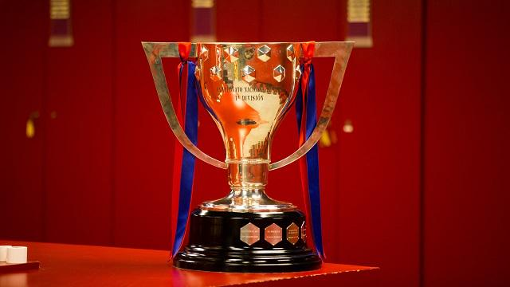
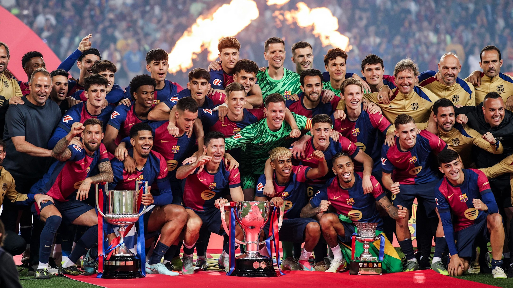

LaLiga, officially known as the Primera División, is Spain’s premier professional football league and one of the most competitive leagues in the world. Established in 1929, it features 20 teams competing in a double round-robin format, where each club plays the others both home and away, making consistency key to success. Relegation and promotion between LaLiga and the Segunda División ensure high stakes every season, keeping competition fierce and unpredictable.
The league has produced some of football’s greatest talents and iconic clubs, most notably Real Madrid and FC Barcelona, whose historic rivalry, El Clásico, captures global attention. Beyond these giants, LaLiga is recognized for its tactical sophistication, technical skill, and emphasis on attacking, possession-based football. Clubs invest heavily in youth academies, producing world-class players and maintaining high standards of play.
LaLiga’s influence extends beyond Spain, attracting international audiences, sponsors, and top-tier players. Its clubs compete in European competitions, often achieving success in the UEFA Champions League, further enhancing the league’s reputation. With a blend of historic prestige, intense competition, and technical mastery, LaLiga is widely regarded as one of the toughest and most entertaining football leagues in the world, offering fans thrilling matches and showcasing some of the finest football talent globally.